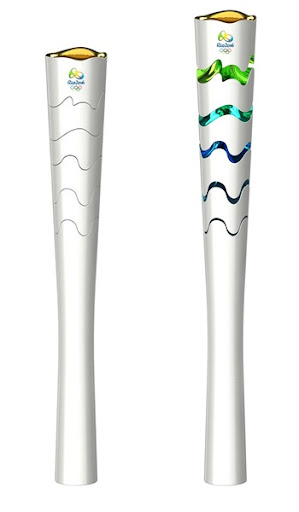

Abertura
símbolos olímpicos
Aros:
Os cinco aros que compõem a bandeira olímpica representam, cada um deles, os cinco continentes do mundo. As cores azul, amarelo, preto, verde e vermelho são comuns nas bandeiras dos países que fazem parte do COI.

Tocha olímpica:
A cada edição dos jogos, a tocha sai da Grécia e é transportada por diversos atletas até chegar à cerimônia de abertura. Acender a chama da tocha representa o início da celebração das Olimpíadas. Com a tocha, a pira olímpica é acendida, sendo apagada apenas ao final dos jogos. O design da tocha muda de acordo com a edição.

Macote:
A primeira mascote olímpica foi o cachorro Waldi, da raça Dachshund, nos jogos de Munique em 1972. As mascotes remetem aos sentidos de alegria e amizade, e são definidos de acordo com as características de cada país-sede.